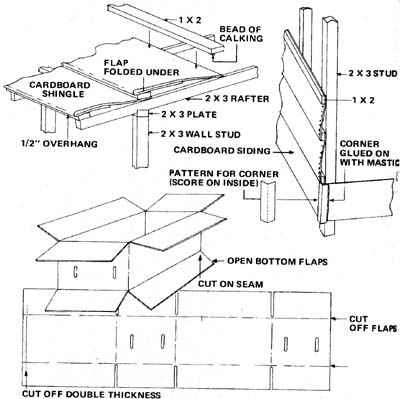
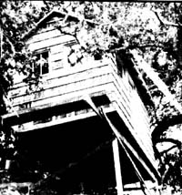

The Clancy Cardboard House
Dan and his family build a cabin using recycles boxes and other paper products.
By the Mother Earth News editors
September/October 1976
"Ah, but there's more than one Way to build a cardboard cabin," says Dan Clancy of Martinez, California. Clancy-an instructor at Diablo Valley College in Pleasant Hill, California-got the idea for a pasteboard mini-palace while conducting his popular environmental-biology course, Conservation Lifestyles, in the spring of 1974.
"One day While feeding my rabbits some lettuce that I'd scrounged from the back door of a supermarket," says Dan, "I noticed that the box given to me by the produce man didn't fall apart in the rain like ordinary cardboard does. So I thought to myself, 'Why not build a cabin out of this stuff right here on our little homestead?"'
(It should be noted-before we go any further-that although Dan, his wife Linda, and daughters Tammy and Lori, live only a few blocks from a freeway in suburban Martinez ... the Clancys have created a real rural retreat on their shaded, out-of-the-way, oversized lot. For the past four years, they've produced nearly all their own vegetables, meat, milk and milk products, eggs, and some fruit [there's little point for them to produce all the fruit they eat, since they live practically next door to a large orchard]. Dan and his family recycle almost all their own wastes [they installed an ECOLET composting toilet a year ago] and even pipe their used household water into an irrigation system. The Clancy homestead frequently serves as an outdoor environmental laboratory for Dan's classes at nearby Diablo Valley College.)
Once the call went out for contributions for the cabin, used windows, an old glass-paned door, a large pile of 2 X 6's, used plywood foundation forms, a carpet made from carpet scraps, nails, a brass doorknob, old packing crates, and other "junk" came in. "Almost everything was recycled," says Joann K. Johnson, one of Dan's student teachers at the time, "and we let the used materials we gathered determine the size of the cabin we built."
That cabin turned out to be an "almost" treehouse (one corner is supported by a living tree and the rest of the structure rests on stilts and concrete piers set into the ground) approximately eight feet wide and twelve and a half feet long. The little building's floor has a total of 102 square feet of usable space ... plenty of room for a queen-sized bed, an ample closet, and some furniture.
"Standard" framing techniques were used on the Cardboard Cabin ... except that, since the structure weighs so little, 2 X 3's (instead of 2 X 4's) were used throughout. Also, for the same reason, all wall studs and roof rafters were spaced two feet apart instead of the more usual 18 inches. Window openings are framed in with packing crate 1 X 4's and the windows themselves are hinged on strips cut from an old tire.
The waxed produce boxes were turned into "siding" by opening each container, slitting it down its taped seam with a razor or sheetrock knife, and then cutting it along the creases to remove its flaps. The resulting 11 X 76-inch strip of waterproofed cardboard was stacked with the others and pressed with heavy weights until all its former corners had been flattened. The pieces of siding were then nailed with 1 X 2's in horizontal rows-from the bottom up-to the sides of the house. All corners were sealed with special "caps" cut from the produce boxes.
The Clancy cabin's roofing "shingles" were made much like its siding ... except that the flaps were cut from only one side of the waxed cartons. The remaining flaps were then folded under the lower edge of the cardboard shingles as they were stapled to the roof so that a fold, rather than a cut edge, would be exposed to the weather. Slots and joints were covered-as were the slots and joints on the walls-with strips of 15-pound tar paper that were glued in place with asphalt mastic. (Note: The steeper the pitch of the roof, the better it'll shed water and the longer it'll last.)
The roof of the Cardboard Cabin was sealed and waterproofed with two coats of asphalt roofing paint. A large brush was used and the first coating was liberally daubed into all cracks. A week later, when it had dried thoroughly, the second coat was applied in the same way. "If your roof is unshaded or you live in an area that has a long wet season," Dan says, "you might want to glue aluminum foil over the cardboard shingles with mastic. The foil will reflect heat and provide additional waterproofing."
A good quality oil-base sealer was used to seal the siding on the Clancy cabin ... followed by two coats of latex exterior paint. "If you're worried about the flammability of cardboard and you build a house like this," notes Dan, "you can spray the interior of the building with a fire retardant. A simple borax solution works well. Call your local fire district officials for recommendations."
All in all, the Clancy Cardboard Cabin cost only $62 . . . or 61 cents a square foot. Not bad for a pasteboard palace that has already withstood a full winter of California rain "without dripping a single drop".
|
|
 |
 |
 |
|
|